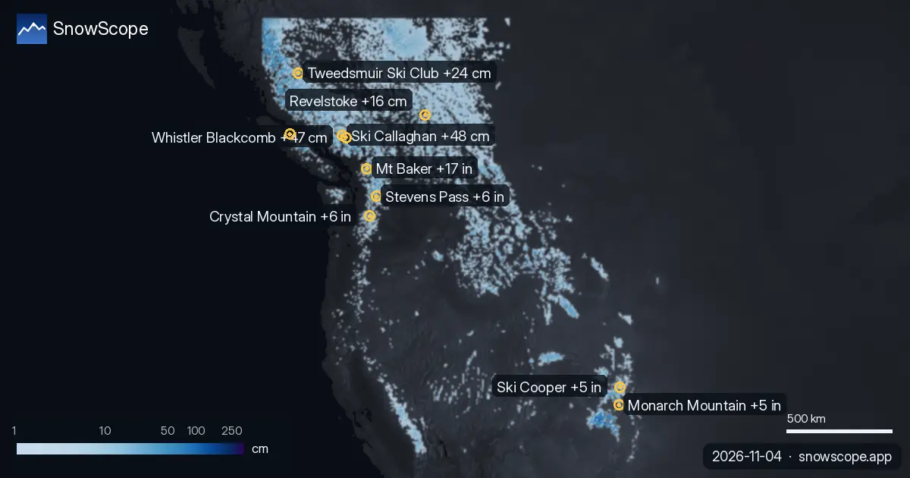

فين غادي يطيح أكثر تلج ف 72 ساعة الجاية: Ski Callaghan +48 سم (4 نونبر)
الجدول اليومي ديالنا ديال المحطات اللي فيهم أكثر تلج جديد متوقع ف 24 ساعة الجاية وحتى ل 7 نونبر، فأوروبا والمغرب وأمريكا الشمالية، مع الحد ديال التلج.

أوروبا والمغرب
Val d'Allos (فرنسا): 12 سم ف 24 ساعة الجاية و 28 سم ف 72 ساعة، الحد ديال التلج تقريبا 2100 م. Chabanon (فرنسا): 10 سم ف 24 ساعة الجاية و 28 سم ف 72 ساعة، الحد ديال التلج تقريبا 2100 م. Dévoluy (فرنسا): 10 سم ف 24 ساعة الجاية و 28 سم ف 72 ساعة، الحد ديال التلج تقريبا 2100 م.
| # | المحطة | المنطقة | +24 س | +72 س | الحد ديال التلج |
|---|---|---|---|---|---|
| 1 | Val d'Allos | جبال الألب · فرنسا | 12 سم | 28 سم | 2100 م |
| 2 | Chabanon | جبال الألب · فرنسا | 10 سم | 28 سم | 2100 م |
| 3 | Dévoluy | جبال الألب · فرنسا | 10 سم | 28 سم | 2100 م |
| 4 | Montclar | جبال الألب · فرنسا | 9 سم | 28 سم | 2100 م |
| 5 | La Grave | جبال الألب · فرنسا | 5 سم | 28 سم | 2900 م |
| 6 | Isola 2000 | جبال الألب · فرنسا | 15 سم | 27 سم | 2000 م |
| 7 | Chaillol | جبال الألب · فرنسا | 8 سم | 27 سم | 2100 م |
| 8 | Val d'Allos | جبال الألب · فرنسا | 11 سم | 25 سم | 2100 م |
| # | المحطة | المنطقة | +24 س | +72 س | الحد ديال التلج |
|---|---|---|---|---|---|
| 1 | Mt Baker | غرب ميريكان · ميريكان | 7 إنش (17 سم) | 17 إنش (44 سم) | 7900 قدم (2400 م) |
| 2 | Stevens Pass | غرب ميريكان · ميريكان | 3 إنش (7 سم) | 6 إنش (14 سم) | 8200 قدم (2500 م) |
| 3 | Crystal Mountain | غرب ميريكان · ميريكان | 2 إنش (5 سم) | 6 إنش (14 سم) | 9500 قدم (2900 م) |
| 4 | Monarch Mountain | غرب ميريكان · ميريكان | 5 إنش (13 سم) | 5 إنش (13 سم) | 9800 قدم (3000 م) |
| 5 | Ski Cooper | غرب ميريكان · ميريكان | 4 إنش (11 سم) | 5 إنش (13 سم) | 9800 قدم (3000 م) |
| 6 | Sahalie Ski Club | غرب ميريكان · ميريكان | 3 إنش (8 سم) | 5 إنش (13 سم) | 8500 قدم (2600 م) |
| 7 | Dutch Henry Ski Hill | غرب ميريكان · ميريكان | 4 إنش (11 سم) | 5 إنش (12 سم) | 9800 قدم (3000 م) |
| 8 | Hurricane Ridge | غرب ميريكان · ميريكان | 2 إنش (4 سم) | 4 إنش (11 سم) | 8900 قدم (2700 م) |
| # | المحطة | المنطقة | +24 س | +72 س | الحد ديال التلج |
|---|---|---|---|---|---|
| 1 | Ski Callaghan | غرب كندا · كندا | 12 سم | 48 سم | 1200 م |
| 2 | Whistler Blackcomb | غرب كندا · كندا | 11 سم | 47 سم | 1900 م |
| 3 | Mount Cain Alpine Park | غرب كندا · كندا | 9 سم | 34 سم | 1800 م |
| 4 | Tweedsmuir Ski Club | غرب كندا · كندا | 1 سم | 24 سم | 1300 م |
| 5 | Revelstoke | غرب كندا · كندا | 4 سم | 16 سم | 1900 م |
| 6 | Sasquatch | غرب كندا · كندا | 11 سم | 15 سم | 2200 م |
| 7 | Manning Park Resort | غرب كندا · كندا | 4 سم | 12 سم | 2200 م |
| 8 | Grouse Mountain | غرب كندا · كندا | 7 سم | 10 سم | 2000 م |

ميريكان
Mt Baker (ميريكان): 7 إنش (17 سم) ف 24 ساعة الجاية و 17 إنش (44 سم) ف 72 ساعة، الحد ديال التلج تقريبا 7900 قدم (2400 م). Stevens Pass (ميريكان): 3 إنش (7 سم) ف 24 ساعة الجاية و 6 إنش (14 سم) ف 72 ساعة، الحد ديال التلج تقريبا 8200 قدم (2500 م). Crystal Mountain (ميريكان): 2 إنش (5 سم) ف 24 ساعة الجاية و 6 إنش (14 سم) ف 72 ساعة، الحد ديال التلج تقريبا 9500 قدم (2900 م).
كندا
Ski Callaghan (كندا): 12 سم ف 24 ساعة الجاية و 48 سم ف 72 ساعة، الحد ديال التلج تقريبا 1200 م. Whistler Blackcomb (كندا): 11 سم ف 24 ساعة الجاية و 47 سم ف 72 ساعة، الحد ديال التلج تقريبا 1900 م. Mount Cain Alpine Park (كندا): 9 سم ف 24 ساعة الجاية و 34 سم ف 72 ساعة، الحد ديال التلج تقريبا 1800 م.
شنو جاي
الحد ديال التلج كيكون تقريبا 300 م تحت علو الجليد المتوقع: الفوق منو التلج الجديد يبقى طري؛ التحت منو توقع تلج مبلول ولا الشتا.
الأرقام ديال المحطات ديال التزلج تقديرات ديال الموديل للجهة الفوقانية؛ محطات القياس كتقيس فنقطة وحدة، فالتاريخ المكتوب.
التوقعات ديال شي أيام يمكن تتبدل: عاود شوف الخريطة نهار قبل ما تسافر.
نصايح للي كيتزلجو
- التلج الجديد كيكون مزيان فالساعات الأولى: سير بكري، قبل الشمس والناس.
- فين علو الجليد طالع فوق المحطة، توقع تلج مبلول وطلع للتيليسييج اللي فالفوق.
- قبل ما تخرج من البيست ولا دير جولة، قرا النشرة الرسمية ديال الانهيارات (الروابط لتحت).
- التلج فالخريطة ماكيعنيش بلي المحطة محلولة: شوف التيليسييج والتواريخ فالموقع ديال المحطة.
- فعّل تنبيه ديال التلج الطري فالتطبيق ديال SnowScope باش تعرف إمتى Ski Callaghan يجيها تلج جديد.
على هاد الأرقام
العلو ديال التلج فالمحطات هو أكثر تلج فالجهة الفوقانية حسب الموديل ديال التلج ديال SnowScope (تقريبا 1 كم، الحساب ديال 4 نونبر)؛ هادو تقديرات لمنطقة، ماشي قياس فنقطة وحدة. الأرقام ديال محطات القياس مقاسة فالتاريخ المكتوب. التوقعات يمكن تتبدل. ديما شوف النشرة الرسمية ديال الانهيارات قبل ما تخرج من البيست.
النشرات الرسمية ديال الانهيارات: EAWS (Europe) · avalanche.org (US) · Avalanche Canada
تقارير أخرى ديال التلج

الجدول اليومي ديالنا ديال المحطات اللي فيهم أكثر تلج جديد متوقع ف 24 ساعة الجاية وحتى ل 9 نونبر، فأوروبا والمغرب وأمريكا الشمالية، مع الحد ديال التلج.

النموذج ديالنا ديال التلج لـ 5 نونبر 2026، كيتوقع حتى لـ 94 سم ديال التلج الجديد فـ كندا الغربية حتى الأحد، مع تساقطات مهمة ديال التلج حتى فـ جبال الألب و غرب الولايات المتحدة.

شكون هي المحطات اللي ديما فيها التلج تقريبا؟ شفنا 46 ديال الشتوات اللي فاتو (1980-81–2025-26) لكل محطة فالخريطة ديالنا، وحسبنا الأيام من 15 دجنبر حتى …